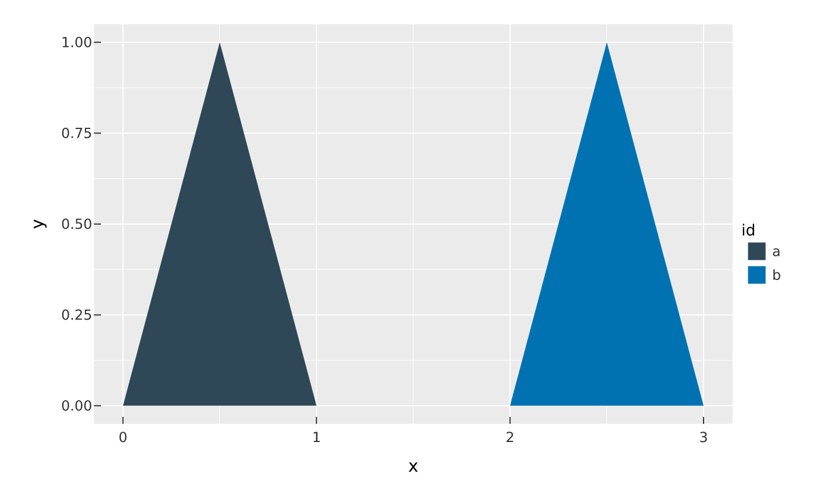
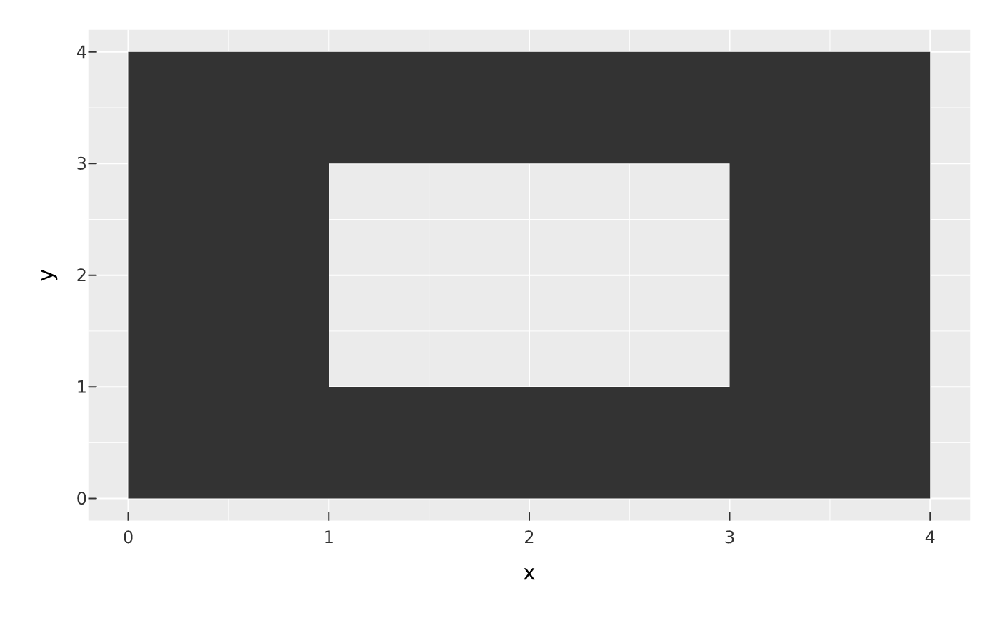
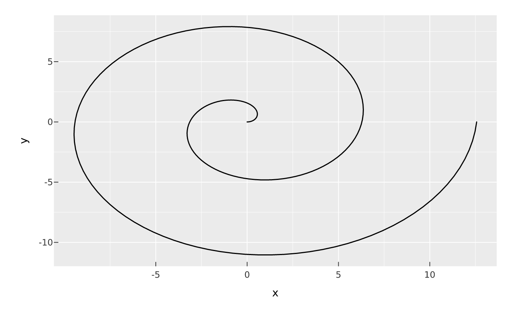

mark_polygon() draws one filled polygon per group, its vertices in data
order (ggplot2's geom_polygon()). A subgroup cuts holes: within a group,
each subgroup is a ring, filled with the even-odd rule so an inner ring is a
hole. mark_path() connects the observations in the order they appear in the
data, unlike mark_line(), which sorts them by x (ggplot2's
geom_path()).
Usage
mark_polygon(
plot,
...,
position = "identity",
blend = NULL,
sketch = NULL,
data = NULL
)
mark_path(
plot,
...,
position = "identity",
blend = NULL,
effects = list(),
sketch = NULL,
data = NULL
)Arguments
- plot
- ...
Encodings (tidy-eval):
x,y,group(one polygon / path per group),subgroup(mark_polygon()holes),fill,color,alpha,linewidth,linetype.- position
Position adjustment: a string —
"identity"(default),"nudge","stack","fill","dodge","dodge2","jitter","jitterdodge","sina"— or a parameterised position object such asposition_dodge()orposition_stack(). Every mark takes"identity"and"nudge"."stack"/"fill"work on bars, areas, points, text and labels (so a label can sit on its stacked bar);"dodge"/"dodge2"on bars, points, text, labels, error bars, line/point ranges, cross-bars, box plots, violins and slab-intervals (so error bars dodge over dodged bars);"jitter"on points, text and labels;"jitterdodge"and"sina"on points. A position a mark does not support is an error naming the ones it does.- blend
Optional blend mode for compositing this layer against what is already drawn beneath it (the panel and earlier layers), one of the CSS
mix-blend-modenames, e.g."multiply","screen","darken". The whole layer composites as one isolated group (not per element).- sketch
A
sketch()spec giving this layer a hand-drawn look (wobbly outlines, hachure fills),NA/FALSEto force it crisp (overriding a plot-widetheme_sketch()), orNULL(default) to inherit. Geometry marks accept it; text, raster, hex and datashade marks do not.- data
Optional layer data frame; overrides the plot data for this layer.
- effects
A list of layer render effects applied to the mark at draw time —
glow(),outline(), andshadow(). Available on stroked and point marks.
Value
The modified PlotSpec.
Details
As in ggplot2, fill fills a polygon (default "grey20") and color
outlines it (no outline by default); a color given without any fill fills
the polygon instead, as it does for the other filled marks.
Examples
tri <- data.frame(
id = rep(c("a", "b"), each = 3),
x = c(0, 1, 0.5, 2, 3, 2.5),
y = c(0, 0, 1, 0, 0, 1)
)
vplot(tri) |> mark_polygon(x = x, y = y, group = id, fill = id)

# a square with a square hole
sq <- data.frame(
x = c(0, 4, 4, 0, 1, 3, 3, 1),
y = c(0, 0, 4, 4, 1, 1, 3, 3),
ring = rep(1:2, each = 4)
)
vplot(sq) |> mark_polygon(x = x, y = y, subgroup = ring)

# a path follows the data order
t <- seq(0, 4 * pi, length.out = 200)
vplot(data.frame(x = t * cos(t), y = t * sin(t))) |> mark_path(x = x, y = y)
